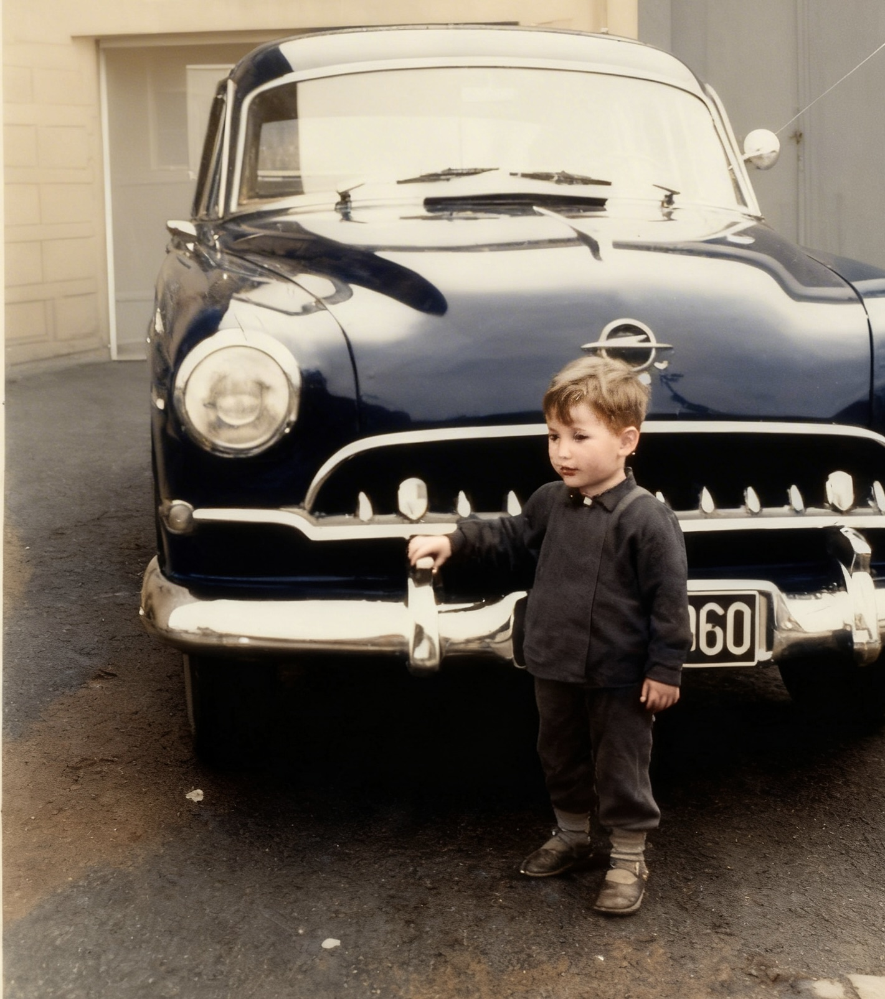

Es muss so um das Jahr 1960 herum gewesen sein. Mein Vater hatte immer noch die Kreidler Florett als fahrbaren Untersatz. Damit konnte aber maximal ein weiteres Familienmitglied mitreisen – und wir waren zu acht! Also überlegte er sich, wie er das ändern könne. In der Nachbarschaft schaffte man sich bereits fleißig die ersten modernen Autos an. Besonders die Unternehmer hatten schon eins.
Auch die Schreinerei Ertz nebenan. Der Senior Josef hatte für die Familie den neuesten Opel Kapitän angeschafft – ein Prachtexemplar. Er hatte sechs Zylinder, wirkte wie ein amerikanischer Straßenkreuzer – und sprang prompt an, wenn man ihn startete. Oft stand ich mit Heiner, meinem besten Freund, davor und bestaunte den Wagen.

Das Bild zeigt Heiner vor dem Opel Kapitän. Ich danke seiner Schwester Waltraut für die Überlassung.
Jetzt aber zurück zu meinem Vater. Mit schmalem Geldbeutel und sechs Kindern, die er versorgen musste, gab es nicht so viele Möglichkeiten. Da bot sich der Bruder meiner Mutter an, der zu Besuch aus der Eifel kommen sollte. Der kannte jemanden mit einem Fiat 1100, einem Mittelklasseauto mit vier Zylindern und Platz für insgesamt sechs Personen. Er wollte es verkaufen. In den Fiat passten zwar nicht alle acht von uns hinein, aber immerhin mehr als einer auf dem Rücksitz der Kreidler. Also kaufte mein Vater den Fiat für wenig Geld.
Der Fiat war aber kein Vergleich mit dem Opel Kapitän von nebenan. Er hatte schon die ersten Rostflecken und – er sprang meistens nicht an. Der Start war jedes Mal ein kleines Spektakel, bei dem niemand wusste, wie es ausgehen würde. Ich war immer aufgeregt und wünschte meinem Vater Erfolg bei diesem Unterfangen. Die Nachbarskinder wussten aber längst, was kommen würde.
Wenn der Fiat nach langem Orgeln des Anlassers endlich ansprang, dann gab es ein lautes Knallen. Gleich danach trat eine dichte, blauschwarze Wolke aus dem Motorraum, die sich über unseren Hof legte. Für einen Moment verschwand das Auto fast darin, und es roch nach Öl und verbranntem Benzin. Mit heutigen Worten würde man sagen: „Mission erreicht“ – aber dies unter großem Gelächter der Nachbarskinder.
Ich schämte mich ein bisschen und wünschte mir nichts sehnlicher, als dass mein Vater irgendwann einmal einen Opel Kapitän haben würde.